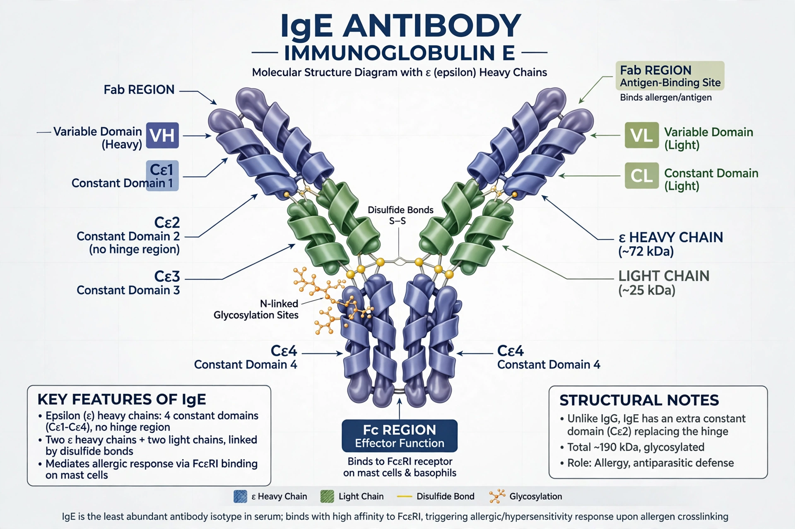

Immunoglobulin E

Immunoglobulin E (IgE) is a class of antibody produced by plasma cells in mammals. It is the least abundant immunoglobulin in serum but has outsized biological effects: IgE bound to mast cells and basophils mediates allergic reactions, and it plays a role in defence against parasitic worms (helminths). IgE was the last immunoglobulin class to be identified, in the 1960s, by Kimishige and Teruko Ishizaka and, independently, by Gunnar Johansson and Hans Bennich.
Structure and receptors
Like other antibodies, IgE consists of two heavy chains (epsilon chains, with four constant domains rather than three) and two light chains. Its Fc region binds with very high affinity to the receptor FcεRI on mast cells and basophils, so that most IgE in the body is cell-bound rather than free in serum, where its half-life is only about two days. A lower-affinity receptor, CD23 (FcεRII), is found on B cells and other cells.
Function in allergy
When a sensitised individual re-encounters an allergen — pollen, dust mite proteins, or foods such as peanut — allergen cross-links receptor-bound IgE, triggering mast-cell degranulation and release of histamine and other mediators. This produces the symptoms of hay fever, asthma, urticaria and, in severe cases, anaphylaxis. Total and allergen-specific IgE measurements are widely used in allergy diagnosis. IgE-mediated food allergy is the target of treatments such as Palforzia (peanut oral immunotherapy) and the anti-IgE antibody omalizumab.
Role in parasite defence
IgE levels rise markedly in helminth infections, and IgE, together with eosinophils, can mediate antibody-dependent cellular cytotoxicity against parasites too large to be phagocytosed. It has been suggested that the allergy machinery of IgE evolved from this anti-parasite system.
Clinical significance
Elevated IgE is associated with atopic diseases (asthma, allergic rhinitis, atopic dermatitis), allergic bronchopulmonary aspergillosis, and rare hyper-IgE syndromes caused by genetic defects such as STAT3 mutations. Omalizumab, a monoclonal antibody that binds free IgE, is approved for allergic asthma, chronic spontaneous urticaria, nasal polyps and (since 2024 in the US) food allergy.